¿Cómo afecta el conflicto entre India y Pakistán al comercio internacional?
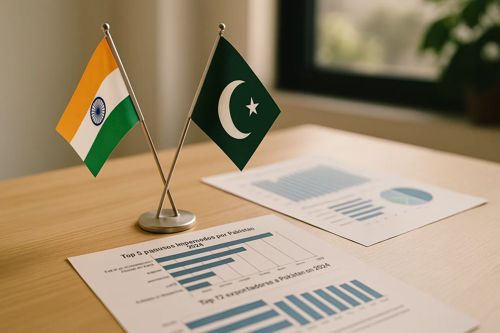Fecha: 3 de mayo de 2024
El reciente atentado perpetrado por presuntos milicianos en la zona turística de Pahalgam, en el valle de Cachemira, dejó al menos 26 víctimas mortales y ha reavivado la tensión entre India y Pakistán. En respuesta, ambos países han adoptado medidas recíprocas que agravan aún más el deterioro de sus relaciones comerciales. Esta escalada amenaza con reducir todavía más un comercio bilateral que ya se había visto drásticamente afectado desde 2018, cuando alcanzó un máximo de casi 3.000 millones de dólares. Para 2024, esa cifra había caído a apenas 1.200 millones.
Entre abril de 2024 y enero de 2025, India exportó a Pakistán alrededor de 500 millones de dólares en productos como fármacos, químicos, azúcar y autopartes, mientras que las importaciones desde Pakistán fueron insignificantes: apenas 420.000 dólares. Las nuevas restricciones agravan este escenario. Islamabad ha cerrado su espacio aéreo a aerolíneas indias y suspendido todos los lazos comerciales, incluso a través de terceros países, después de que Nueva Delhi clausurara el paso fronterizo de Attari. Según Ehsan Malik, director ejecutivo del Consejo Empresarial de Pakistán, estas medidas podrían tener un efecto negativo especialmente en el sector farmacéutico paquistaní, que depende en gran medida de las importaciones indias.
Un conflicto que trasciende lo político: breve contexto histórico
Tras el dominio británico en el siglo XVIII, el subcontinente indio vivió una de sus divisiones más profundas con la partición de 1947, que dio origen a dos nuevos estados: la India, de mayoría hindú, y Pakistán, concebido como un estado musulmán con secciones occidental y oriental. Esta separación sentó las bases de una tensión duradera entre ambos países, que se ha manifestado en tres guerras importantes (1947–48, 1965 y 1971) y un conflicto limitado en 1999, todos con el territorio de Cachemira como eje central. La guerra de 1971 resultó en la independencia de Pakistán Oriental, que pasó a convertirse en Bangladesh.
La rivalidad escaló aún más tras las pruebas nucleares de India en 1998, a las que Pakistán respondió con sus propios ensayos. En paralelo, Pakistán ha enfrentado conflictos internos con grupos militantes como el Tehreek-e-Taliban Pakistan. En 2008, la tensión alcanzó un nuevo pico con los ataques terroristas en Mumbai. Mientras tanto, India ha emergido como potencia regional, aunque aún arrastra desafíos estructurales como la pobreza, la corrupción y la presión ambiental.
Impacto comercial directo del conflicto actual
Exportaciones de India hacia Pakistán (2024)

India incrementó drásticamente sus exportaciones a Pakistán en 2024, duplicando los niveles de 2022. Lo más destacado es el enorme aumento de combustibles y aceites minerales, que pasaron de apenas 13,7 millones € en 2022 a más de 632 millones € en 2024. Esto sugiere que, pese a las tensiones, había un flujo comercial en expansión, especialmente en sectores energéticos y farmacéuticos.
Este crecimiento se ve directamente amenazado por el reciente conflicto. Las prohibiciones impuestas por India tras el atentado en Cachemira afectarán directamente a este volumen comercial, pudiendo detener casi por completo el suministro de estos productos esenciales para Pakistán.
Importaciones de India desde Pakistán (2024)
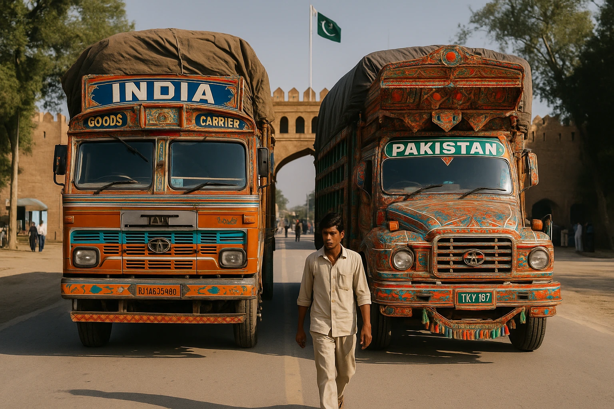Las importaciones de India desde Pakistán eran ya muy bajas en 2024 y mostraban una fuerte caída desde 2022 (de 19 millones a solo 447 mil €). Esto demuestra una asimetría comercial muy marcada y una desconfianza económica que venía en aumento incluso antes del conflicto reciente.
La suspensión del comercio bilateral impuesta por India no tendrá un impacto significativo en su economía directa, pero consolida un quiebre casi total en la relación comercial con Pakistán. También refleja que el conflicto ha tenido ya consecuencias prácticas en la última década, más allá de lo diplomático.
¿Cómo afecta este conflicto al comercio internacional?
A escala global, sin embargo, el conflicto sí puede generar efectos indirectos en el comercio exterior, especialmente si se prolonga. La interrupción de rutas logísticas, el aumento del riesgo geopolítico y la posible reconfiguración de proveedores en sectores como el farmacéutico o el energético podrían afectar a terceros países que operan con ambos mercados o que dependen del tránsito regional en Asia del Sur.
Conclusiones
Aunque India y Pakistán comparten frontera, historia y ciertas complementariedades económicas, los datos confirman que no existe una verdadera interdependencia comercial entre ambos. A pesar del aumento puntual en algunas exportaciones indias hacia Pakistán en 2024, el volumen total de comercio bilateral sigue siendo marginal si se compara con el peso económico de ambos países en la región.
Esta desconexión económica no es casual, sino el reflejo directo de décadas de tensiones diplomáticas, conflictos armados y desconfianza mutua. Lejos de actuar como freno a la hostilidad, el comercio bilateral ha sido víctima de esta, manteniéndose frágil, inestable y fácilmente reversible ante cualquier incidente político o militar. En consecuencia, el impacto de las recientes rupturas comerciales es limitado en términos macroeconómicos, pero simbólicamente refuerza la idea de que la frontera entre India y Pakistán sigue siendo más política que económica.
Fuentes y datos utilizados
- TRADEMAP
- REUTERS
- CIA World Factbook
Gráficas
 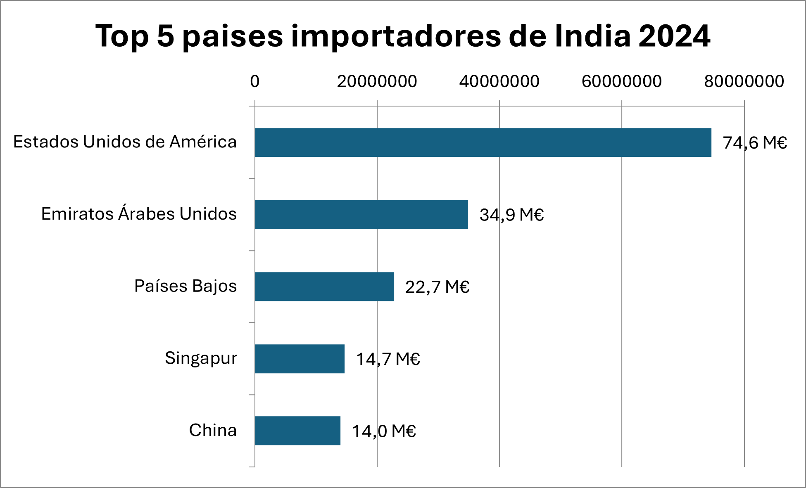
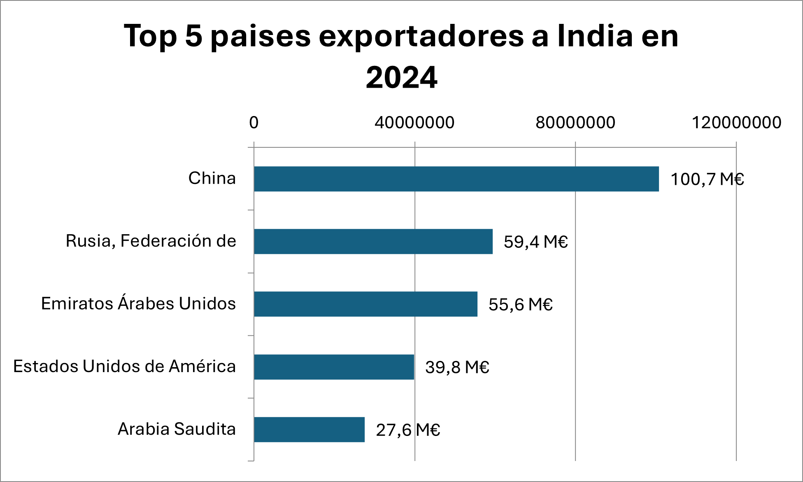
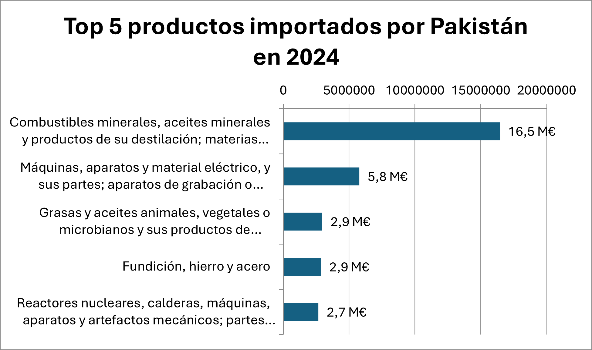
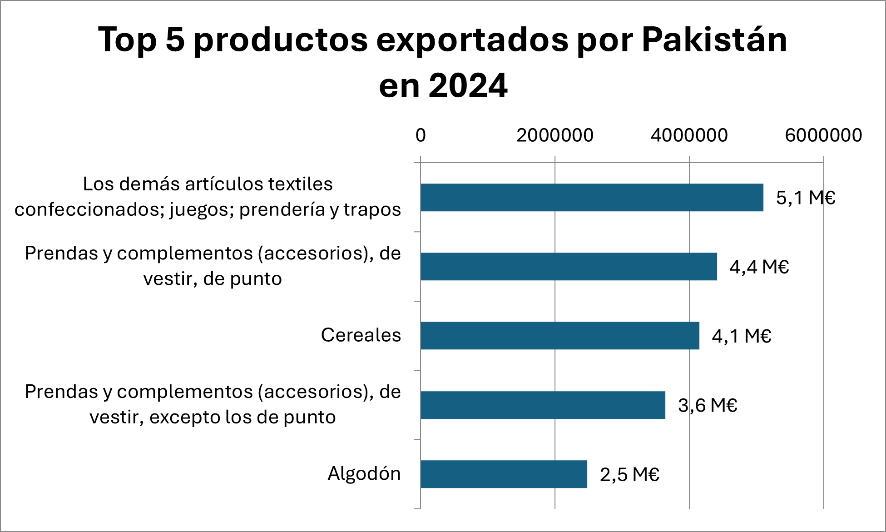
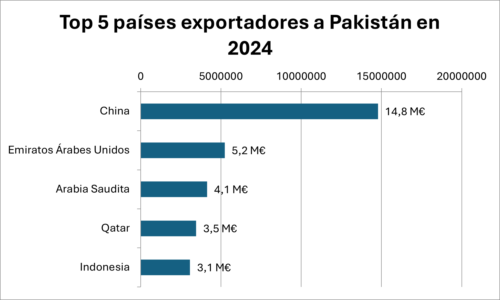
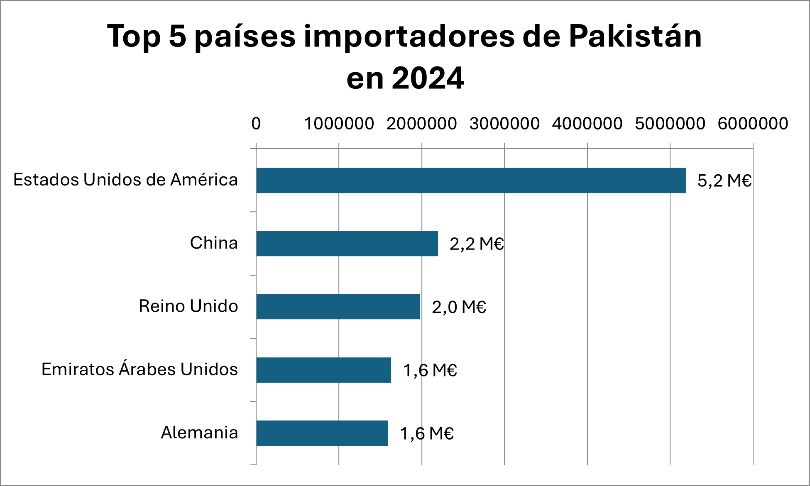
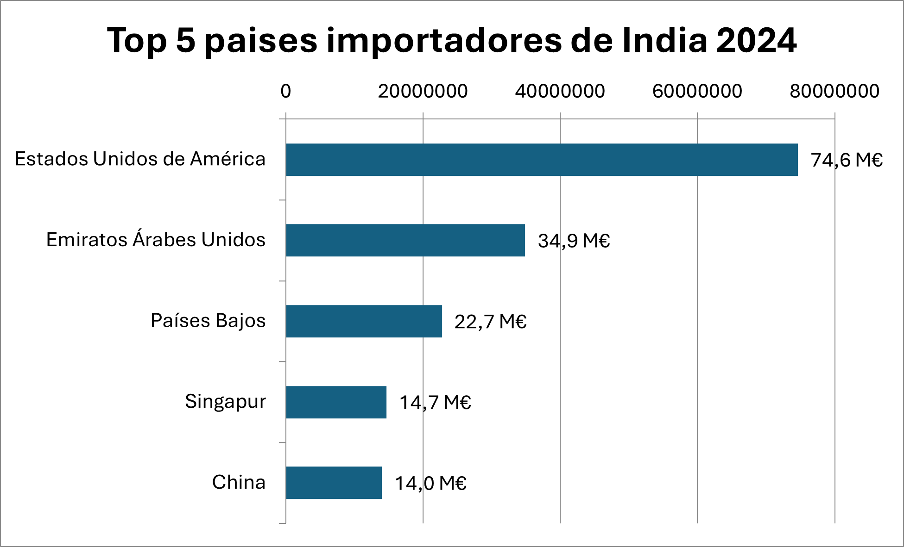
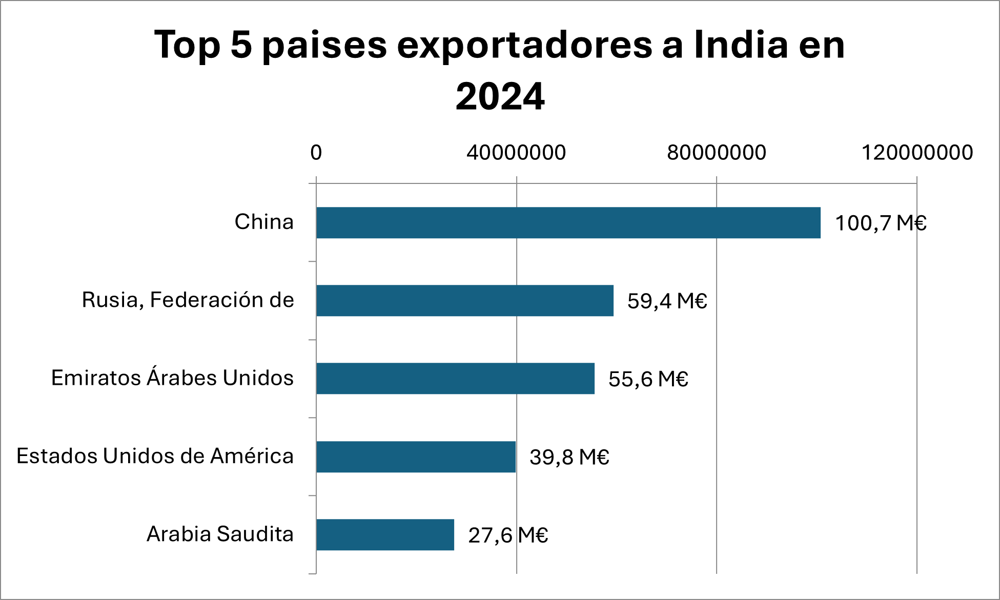
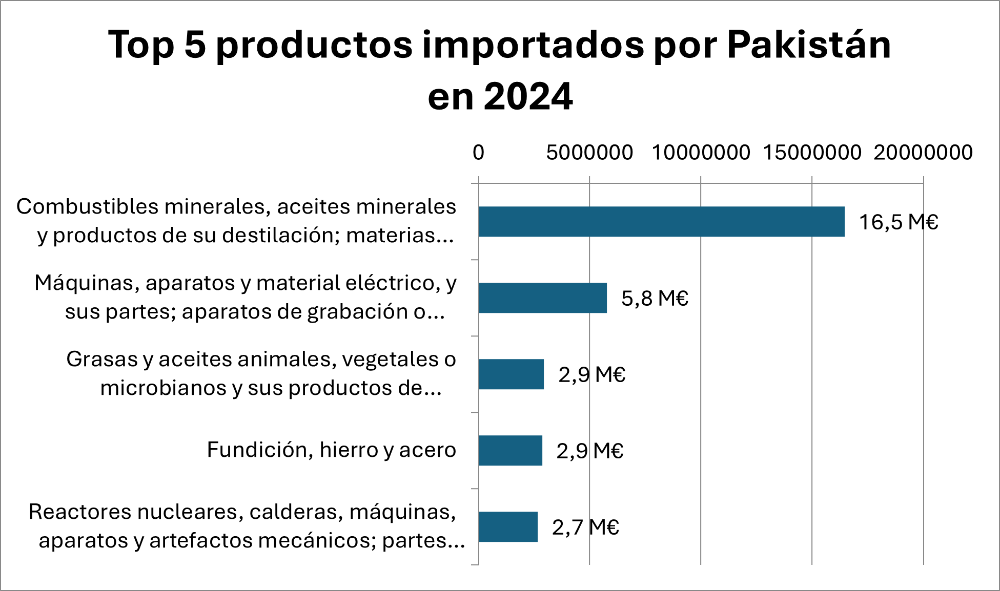
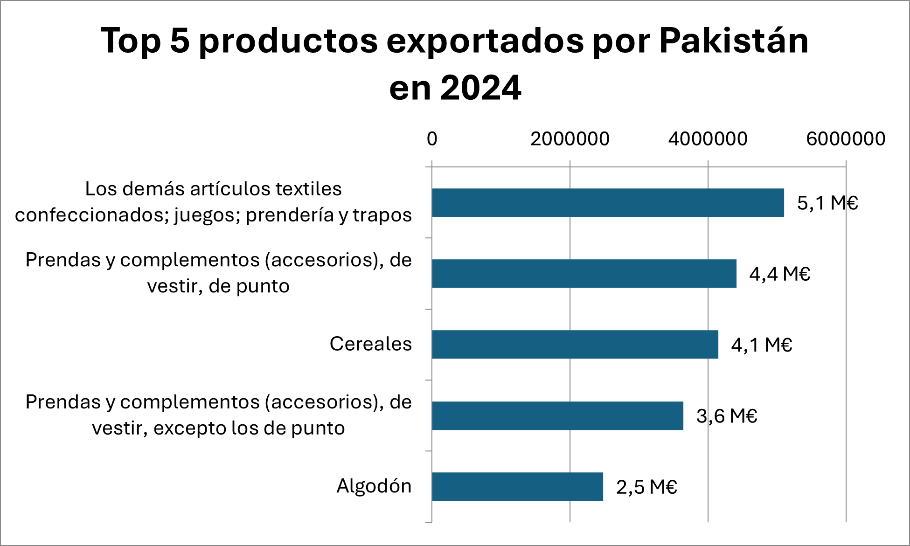
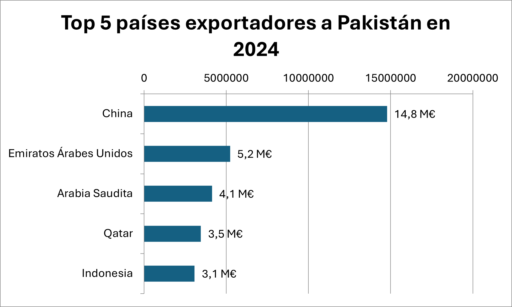
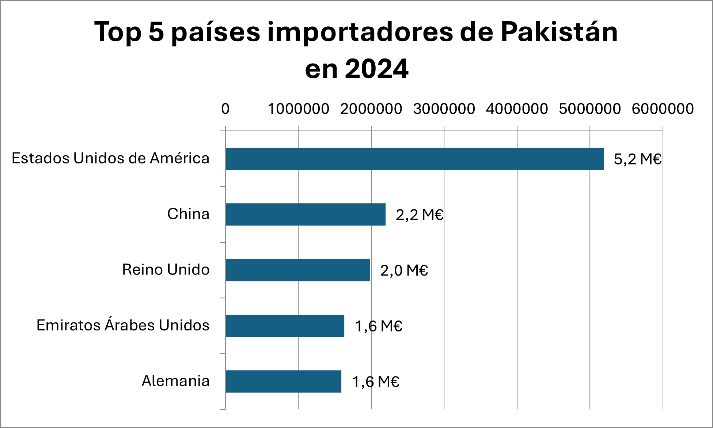